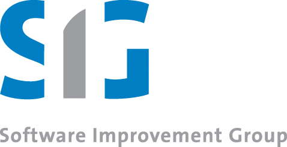
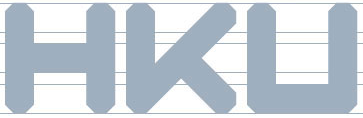

Geboortedatum: 27 november 1970
Adres: Maluslaan 116, 9741 LP, Groningen
Telefoon: 06 2509 3817
E-mail:
b.barnard@pl.hanze.nl
Sites:
bartbarnard.nl,
mandarin.nl
Github |
LinkedIn
Algemeen
Mijn interesse ligt op het snijvlak van techniek, kunst, en filosofie. Vanuit die basis houd ik technologische ontwikkelingen bij, reflecteer ik op de (maatschappelijke) consequenties hiervan, die ik uiteindelijk in de geschiedenis en tradities probeer te duiden. Ik heb een creatieve geest die open staat voor nieuwe inzichten, ideeën of concepten. Ik probeer mezelf continu zowel te verbreden als te verdiepen, vanuit de stelregel dat ik elke dag iets nieuws moet leren.
Omdat ik een grote passie heb voor kennis en kennisoverdracht werk ik sinds tien jaar volledig in het onderwijs. Maar ook daarbuiten geef ik graag en vaak lezingen en presentaties. Vanuit deze interesse en passie heb ik altijd meerdere projecten lopen waar ik bijna dagelijks aan werk en waarin ik nieuwe methoden en technieken uitprobeer. De werkzaamheden hierin lopen uiteen van het uitproberen van een javascript-library voor het maken van geluid, via het schrijven van een complexe stored procedure tot aan complexe java-architecturen. Kennisoverdracht hierover doe ik via lab-reports.
Ik heb een sterke mening over hoe de wereld er uit zou moeten zien en welke stappen gezet moeten worden om dat te bereiken. Ik deel dat te pas en te onpas via ingezonden brieven en opiniestukken in diverse regionale en landelijke dagbladen. Indachtig de uitspraak van Schelling uit 1802 verlang ik dat niets in het universum teneergedrukt, ingeperkt of ondergeschikt is, en eis ik voor elk ding een bijzonder en vrij bestaan.
Meer wijsgerige overwegingen publiceer ik op mijn blog.
Huidig werk
Momenteel werk ik bij het Instituut voor Communicatie, Media & IT van de Hanzehogeschool Groningen. Als docent geef ik les aan alle jaren van de opleiding; dat varieert van databases of eenvoudige programmeervakken in het eerste jaar, via Python en Java in het tweeede jaar tot Machine Learning in het vierde. Ik hou de ontwikkelingen binnen het vakgebied altijd nauwgezet bij, en onderhoud goede banden met ICT-bedrijven en -organisaties in het noorden. Een lijst van alle vakken waar ik bij betrokken ben staat online.
Eerdere werkervaring
2006 – 2008: ontwikkelaar bij Cope IPS (Leiden): Cope is een bedijf dat online enquête-software schrijft en onderhoudt, en statistische analyses uitvoert. Hun klanten bevinden zich zowel in het publieke als in het commerciële domein (bijvoorbeeld Kempen of Twynstra Gudde, maar ook de Raad voor de Kinderbescherming of de Universiteit Twente). Hier was ik verantwoordelijk voor onderhoud en uitbreiding van de code-base (php/mysql) en het opzetten van nieuwe vragenlijsten op basis van specifieke klantwensen (XSLT en een DSL). Ook onderhield ik hier diverse klantcontacten. Cope is inmiddels opgegaan in Dimensional Insight
2004 – 2006: software-analyst bij de Software Improvement Group (Amsterdam): Bij de SIG worden grote complexe informaticasystemen doorgelicht. Te denken valt hierbij aan onderhoudbaarheid en uitbreidbaarheid van de programmacode. Tot hun klanten rekenen zij grote bedrijven met een complexe code-base, zoals DUO, CJIB, en vele anderen. Dit was een behoorlijk technische omgeving waar ik me met name bezig heb gehouden met de interpretatie van de gegevens die uit de analyses naar voren kwamen en het schrijven van technische rapportages hierover.

2008 – 2011: part-time docent aan de Professional School of the Arts Utrecht: De PSAU was een samenwerkingsverband tussen de UU en de HKU, dat helaas te kort heeft bestaan. Onder mijn begeleiding is een redelijk aantal studenten aan de PSAU afgestudeerd, waaronder drie cum laude. Onderwerpen van de theses waren bijvoorbeeld ‘Het aura van het digitale kunstwerk’, ‘De rol van het literaire tijdschrift in de moderne maatschappij’ of ‘De theoriegeladenheid van kijken naar een theatervoorstelling’.
2001 – 2008: part-time docent Interaction Design aan de Hogeschool voor de Kunsten Utrecht: Binnen de opleiding Interaction Design was ik onder andere verantwoordelijk voor het tweedejaars vak waarin de noodzaak van goed kunnen werken met software centraal stond. Aan de hand van meer traditionele theatertheorie werden hierin verschillende programma’s en hun werking geanalyseerd.

Vóór 2004 heb ik als programmeur bij diverse internet- en multimedia-bureaus gewerkt.


overflow